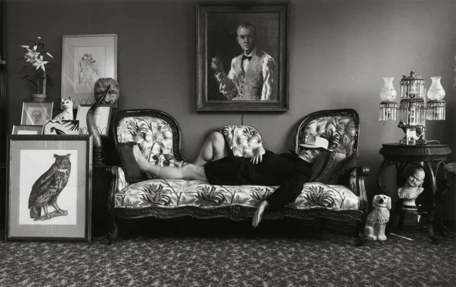

大師作家們的訪談：做什麼就像什麼！
從1953年至2020年《巴黎評論》（The Paris Review）的作家訪談系列，幾乎把半個世紀的重要作家們寫作生涯的全面回顧。作家訪談不是短短幾小時的對談，有時計畫數月甚至數年的貼身採訪，作家們往往能放下一切戒備，自然而然地談論寫作習慣、方法、困惑甚至私人的感情生活。破除對於寫作的一些誤解和迷思，比如他們都不靠靈感、激情、酒精來寫作，而是勤勉且自律，認真嚴謹地看待自己的職業，反覆不斷地修改直到產出一部作品。就算志業不在成為作家，或其他工作領域的人們，都能在訪談當中看到相同的問題，與待解的答案。
從什麼時候決心寫作？
奧罕．帕慕克（Orhan Pamuk）：二十二歲的時候。自從七歲那年我就想成為一名畫家，我的家人也都接受了這一點，他們都認為我將成為一位著名畫家。但後來我腦海裡起了變化，就彷佛一顆螺絲鬆了一般。我停住不畫了，且馬上開始寫小說。我記得我還不知道要寫什麼，但我就想成為一名小說家。
蘇珊．桑塔格（Susan Sontag）：在我大概六歲的時候，我讀到了居里夫人的女兒寫的《居里夫人傳》，所以最初，我立志成為化學家。後來童年的大部分時間裡，我又想成為物理學家。最後讓我不能自拔的是文學。我真正想要的是將每一種生活都過一遍，一個作家的生活似乎最具包容性。
切斯拉夫．米沃什（Czesław Miłosz）：我在高中時開始寫作。說我想成為一個詩人，這是不準確的。我只想與我的環境保持衝突，採取消極的態度，福樓拜所謂「保持對資產階級的仇恨」。我想要不同的風格，以不同的方式生活。

是否存在提高寫作技巧的秘密方式？
詹姆斯．鲍德温（Jame Baldwin）：才華絕不重要。我知道很多有才華的人最後都毀掉了。除了才華以外，全是那些平常的詞——自律、愛、運氣，但最重要的是，忍耐。
亨利．米勒（Henry Miller）：方法當然有，可是誰會這麼做呢？不管是有意還是無意，每個藝術家終究都要修行的，以這樣或者那種的方式。每個人都有自己的道路。我想說的是，大多數時候，寫作是一件無聲無息的事，就在你走路的時候、刮鬍子的時候、玩遊戲的時候，或者作著其他隨便什麼事的時候，甚或是在和無關緊要的人有一搭沒一搭說話的時候。你在寫東西，你的大腦在寫東西，就在你意識的背後。那麼，你在打字機前面做的事情，其實和轉帳差不多。
弗朗索瓦．莫里亞克（François Mauriac）：我相信年輕的小說家同行們全神貫注於技巧。他們似乎認為一部優秀的小說應當遵循某些外界施加的規則。然而，這種對技巧的全神貫注實際上妨礙了他們，使得他們在創作中困惑不安。偉大的小說家不依賴任何人，只靠自己。
一位小說家的創造性通常和他風格的個人特性有著緊密的聯繫。借來的風格是糟糕的風格。從福克納到海明威這些美國作家創造了一種風格，得以酣暢淋漓地表達他們想要訴說的一切——這樣的風格是無法傳遞給他們的追隨者的。
線上報名課程
全面回顧半個世紀的重要作家們寫作生涯
從1953年至2020年《巴黎評論》（The Paris Review）的作家訪談系列，幾乎把半個世紀的重要作家們寫作生涯的全面回顧。作家訪談不是短短幾小時的對談，有時計畫數月甚至數年的貼身採訪，作家們往往能放下一切戒備，自然而然地談論寫作習慣、方法、困惑甚至私人的感情生活。
延伸學習
-

揭開法式餐廳工作的大小事 feat.安吉阿魯的小甜甜
負責的部分是每一季的新菜單規劃及試做，也會有不定時活動或節慶的菜單需要研發~新菜單的測試方式大概是主廚跟我們說這次菜單的概念及想要用甚麼食材料理，再讓甜點部的人員試著做出來，這過程中會不斷與主廚討論與試吃。通常開始到完成的時間不一定，短至3天，長至1個月都有可能，也有主廚試吃完之後說「也許這不是個好主意」的事情發生過。
閱讀更多 -
樂沐陳嵐舒：大自然說的話，由廚師來表達
「台灣料理與台灣味是不同的議題」，陳嵐舒說，台灣擁有許多不同省份、不同代表性的料理，什麼能真正代表台灣料理呢？以上都是。而如何定義一個文化的料理？她認為，該是Technique（技巧）、Terroir（風土）、 Taste（味道）三者達到完美的平衡。 至於台灣味，陳嵐舒引用法國主廚Michel Bras的話：「大自然說的話，由廚師來表達。」料理的精髓源自食物真味的追求，「用台灣這片土地，生產食材所做的菜，就是台灣味。」
閱讀更多 -
大師作家們的訪談：做什麼就像什麼！你所投其工作的抉擇、熱忱、決心，以及成為現在的自己
作家訪談不是短短幾小時的對談，有時計畫數月甚至數年的貼身採訪，作家們往往能放下一切戒備，自然而然地談論寫作習慣、方法、困惑甚至私人的感情生活。破除對於寫作的一些誤解和迷思，比如他們都不靠靈感、激情、酒精來寫作，而是勤勉且自律，認真嚴謹地看待自己的職業，反覆不斷地修改直到產出一部作品。就算志業不在成為作家，或其他工作領域的人們，都能在訪談當中看到相同的問題，與待解的答案。
閱讀更多 -
揭開法式餐廳工作的大小事 feat.安吉阿魯的小甜甜
負責的部分是每一季的新菜單規劃及試做，也會有不定時活動或節慶的菜單需要研發~新菜單的測試方式大概是主廚跟我們說這次菜單的概念及想要用甚麼食材料理，再讓甜點部的人員試著做出來，這過程中會不斷與主廚討論與試吃。通常開始到完成的時間不一定，短至3天，長至1個月都有可能，也有主廚試吃完之後說「也許這不是個好主意」的事情發生過。
閱讀更多 -
樂沐陳嵐舒：大自然說的話，由廚師來表達
「台灣料理與台灣味是不同的議題」，陳嵐舒說，台灣擁有許多不同省份、不同代表性的料理，什麼能真正代表台灣料理呢？以上都是。而如何定義一個文化的料理？她認為，該是Technique（技巧）、Terroir（風土）、 Taste（味道）三者達到完美的平衡。 至於台灣味，陳嵐舒引用法國主廚Michel Bras的話：「大自然說的話，由廚師來表達。」料理的精髓源自食物真味的追求，「用台灣這片土地，生產食材所做的菜，就是台灣味。」
閱讀更多 -
大師作家們的訪談：做什麼就像什麼！你所投其工作的抉擇、熱忱、決心，以及成為現在的自己
作家訪談不是短短幾小時的對談，有時計畫數月甚至數年的貼身採訪，作家們往往能放下一切戒備，自然而然地談論寫作習慣、方法、困惑甚至私人的感情生活。破除對於寫作的一些誤解和迷思，比如他們都不靠靈感、激情、酒精來寫作，而是勤勉且自律，認真嚴謹地看待自己的職業，反覆不斷地修改直到產出一部作品。就算志業不在成為作家，或其他工作領域的人們，都能在訪談當中看到相同的問題，與待解的答案。
閱讀更多 -
揭開法式餐廳工作的大小事 feat.安吉阿魯的小甜甜
負責的部分是每一季的新菜單規劃及試做，也會有不定時活動或節慶的菜單需要研發~新菜單的測試方式大概是主廚跟我們說這次菜單的概念及想要用甚麼食材料理，再讓甜點部的人員試著做出來，這過程中會不斷與主廚討論與試吃。通常開始到完成的時間不一定，短至3天，長至1個月都有可能，也有主廚試吃完之後說「也許這不是個好主意」的事情發生過。
閱讀更多 -
樂沐陳嵐舒：大自然說的話，由廚師來表達
「台灣料理與台灣味是不同的議題」，陳嵐舒說，台灣擁有許多不同省份、不同代表性的料理，什麼能真正代表台灣料理呢？以上都是。而如何定義一個文化的料理？她認為，該是Technique（技巧）、Terroir（風土）、 Taste（味道）三者達到完美的平衡。 至於台灣味，陳嵐舒引用法國主廚Michel Bras的話：「大自然說的話，由廚師來表達。」料理的精髓源自食物真味的追求，「用台灣這片土地，生產食材所做的菜，就是台灣味。」
閱讀更多